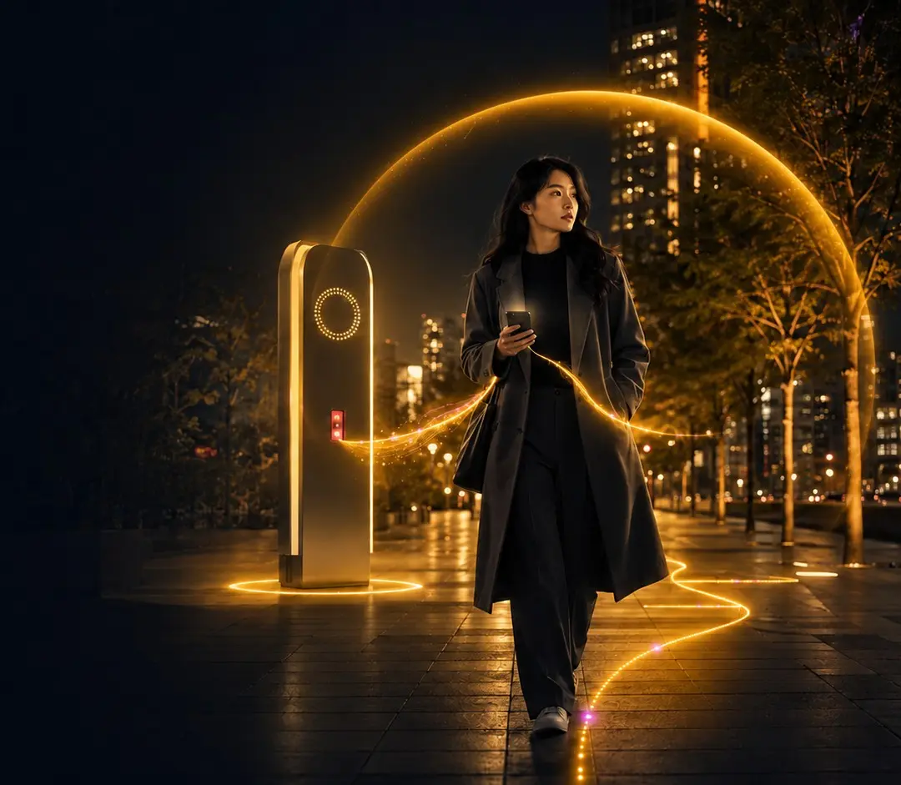

PRODUCT · UX/UI · SERVICE SYSTEM让独行，
城市女性夜间安全联动系统
AURA她域
让独行，
不再等于孤立无援。
手机 App × 街道安全屏 × 警方后台
把个人报警工具扩展成可解释、可撤销、可联动、可恢复的城市夜间安全体验。

01分级预警15s → 20s → 30s
02三端接力位置先到 · 画面后到
INTERACTION DESIGN PORTFOLIO · 2026SCROLL TO EXPLORE ↓
危险尚未被确认的犹豫期，
才是用户最需要被接住的时刻。
公开报警可能激化风险，断网与硬件都可能失效。AURA 让风险逐级被识别，也让用户始终知道“为什么升级、还剩多久、可以做什么”。
01DISCOVER · RESEARCH
从 60 份问卷中，找到真正影响安全感的四个问题
概念验证样本 n=60 · 主用户为 20–30 岁夜间通勤女性
18–22 点步行回家
怕尾随、怕误会，更怕公开报警暴露自己。需要风险解释、隐蔽操作与可信落脚点。
22 点后下班
网络、电量与双手操作受限，需要公共硬件、联系人和离线能力共同兜底。
关键结论
用户最需要的不是更大的报警按钮，而是可解释、可撤销的渐进干预。
- 看得懂风险
- 隐蔽操作
- 有可信落脚点
02DEFINE · STRATEGY
五项设计原则，构成一条不暴露用户的安全链路
从策略到功能，从个人求助到城市系统接力
隐蔽优先
无声、无切屏、单手触发
伪装来电 / PIN / 静默撤销分级干预
证据累计，避免直接误报
观察 15s → 警戒 20s → SOS 30s隐私分级
风险升高才解锁权限
仅通知 / 轨迹 / 完整定位多端兜底
手机—安全屏—警方接力
本地记录 / 短信包 / 恢复补传情绪安抚
持续解释，提供确定感
明确 ETA / 呼吸 / 事件复盘01安全地图02路线比较03开启守护04一级观察05二级警戒06SOS 宽限07警方响应08安全到达
01隐蔽触发0230s 宽限03三端同步04救援处置05事件归档06情绪恢复
VISUAL SYSTEM
属于夜晚的 AURA 视觉语言
暖金贯穿主操作与路径，电光紫表示系统联动，珊瑚红只用于正式危险。
- 栅格
- 8px
- 圆角
- 16px
- 页面边距
- 24px
- 动效令牌
- 160 / 240 / 600ms
03DESIGN · RISK LOGIC
亲自切换六个状态，看风险如何升级、降级与接力
选择上方阶段，手机界面、数据权限与三端联动会同步改变
路线被持续守护
照明、人流、安全点和路线偏离在端侧计算；不上传精确轨迹，也不打扰用户。
- 为什么升级
- 端侧发现连续轨迹证据
- 用户出口
- 我没事 / 继续观察
22:18● 5G ▰
你03
常态守护
✦
安全优先路线
剩余 18 分钟 · 4 个安全点
LIVE RELAYEVENT AURA-023
手机 App端侧识别 / 隐蔽触发ONLINE
街道安全屏补光 / 录像 / 语音STANDBY
警方后台定位 / 处置 / 证据STANDBY
当前数据权限仅通知
04CORE EXPERIENCE
把关键体验放进一条可以探索的任务路径
从第一次打开到离线守护，点击左侧目录切换完整设计场景
02 / 06 · TRAVEL
路线选择、途中守护与一级观察
- 路线不只比较快慢
- 守护信息始终可见
- 偏离 35m 即时反馈
05PRODUCT PLAYGROUND · INTERACTIVE
不是只看页面：现在可以真正完成六组核心任务
切换功能模块并操作路线、权限、上报、离线、到达与无障碍设置，每一次选择都会改变界面状态
安全路线不是“最快路线”
照明、人流、安全点与预计时间同时呈现，让用户理解每条路线为什么更安全。
UQ St Lucia↓Scape South Bank
起终
路线比较选择下方路线查看依据
06COVERT SOS · INTERACTIVE
在不能公开报警时，用户仍然可以行动
选择隐蔽触发方式并运行测试，观察无声识别、短震确认与伪装界面
TRIGGER TEST MODE
选择一种隐蔽触发方式
测试期间不会通知任何人，只验证触发反馈与伪装页。
真实产品中：普通 PIN 结束事件；胁迫 PIN 只显示“已结束”，后台继续守护。22:18● 5G ▰
◎测试准备就绪
音量键
点击左侧按钮开始 10s 模拟测试
- 01模拟操作
- 02短震确认
- 03进入伪装页
07SYSTEM · CROSS-DEVICE
一次求助事件，手机、安全屏与警方如何完成接力
点击四个节点，查看数据与现场能力如何逐步解锁
APP手机 App低敏识别 · 隐蔽触发
BLE / EVENT ID
NODE 03街道安全屏待命
LOCATION / VIDEO
POLICE警方后台等待事件
当前事件二级同步
BLE 连接 · 0.8s 内同步警戒
08SYSTEM · POLICE CONSOLE
警方后台：先呈现最需要行动的信息，再逐步补全证据
选择事件并按处置顺序接入粗定位、精确位置、轨迹、安全屏画面、语音与联系人
LIVE EVENTS3 个待处置事件
约 200m安全屏 03语音 LIVE
STEP 1 / 4事件 ID 与粗定位
Grey Street · 42m最近 AURA 安全屏 03 · 约 200m 范围ACTION PRIORITY
09SYSTEM · SAFETY SCREEN
街道安全屏，把公共空间转化为可立即使用的安全点
切换五种标准状态；在公共信息状态下，还可以长按实体键 3 秒模拟无手机求助
AURA 安全区域
公共信息今晚安全开放
天气 · 公交 · 周边安全点
屏幕不显示用户姓名或目的地公共空间，也能成为可立即使用的安全点
- 所有屏幕仅显示事件状态与行动
- 无手机也可在左侧终端长按 3 秒求助
- 30s 倒计时内可以撤销误触
- 蓝牙失败后支持 NFC / 扫码降级
10VALIDATE · USABILITY
用可用性测试验证：用户是否看得懂、做得到、敢使用
6 名女性用户 · 5 项核心任务 · 低保真可点击原型
测试任务完成结果结论
6/6 完成 · 平均 18s
通过5/6 理解 · 1 人误认为已报警
需优化6/6 完成 · 按住动作降低误触
通过4/6 完成 · 独立开关导致困惑
需优化5/6 完成 · 需强化短信包说明
需优化11DESIGN ARCHIVE
展开更多设计图，查看从发现问题到系统落地的完整证据
点击任意图卡进入高清查看
AURA 的最终价值
把个人报警工具，扩展成可解释、可撤销、可联动、可恢复的城市夜间安全体验。
六项核心设计价值三级识别状态有依据、有倒计时、有出口 隐蔽求助六类触发、伪装界面、静默撤销 三端接力手机判断、现场介入、警方响应 隐私分级风险升高才解锁位置与画面 异常兜底本地轨迹、短信位置包、恢复补传 情绪收尾明确进度、呼吸引导与事件复盘
四条高风险边界被抢手机事件继续；断连写入风险信号 嫌疑人在旁胁迫 PIN 伪装取消，后台继续 误触 SOS30s 宽限 + 按住 2 秒撤销 位置隐私风险分级授权，结束自动收回